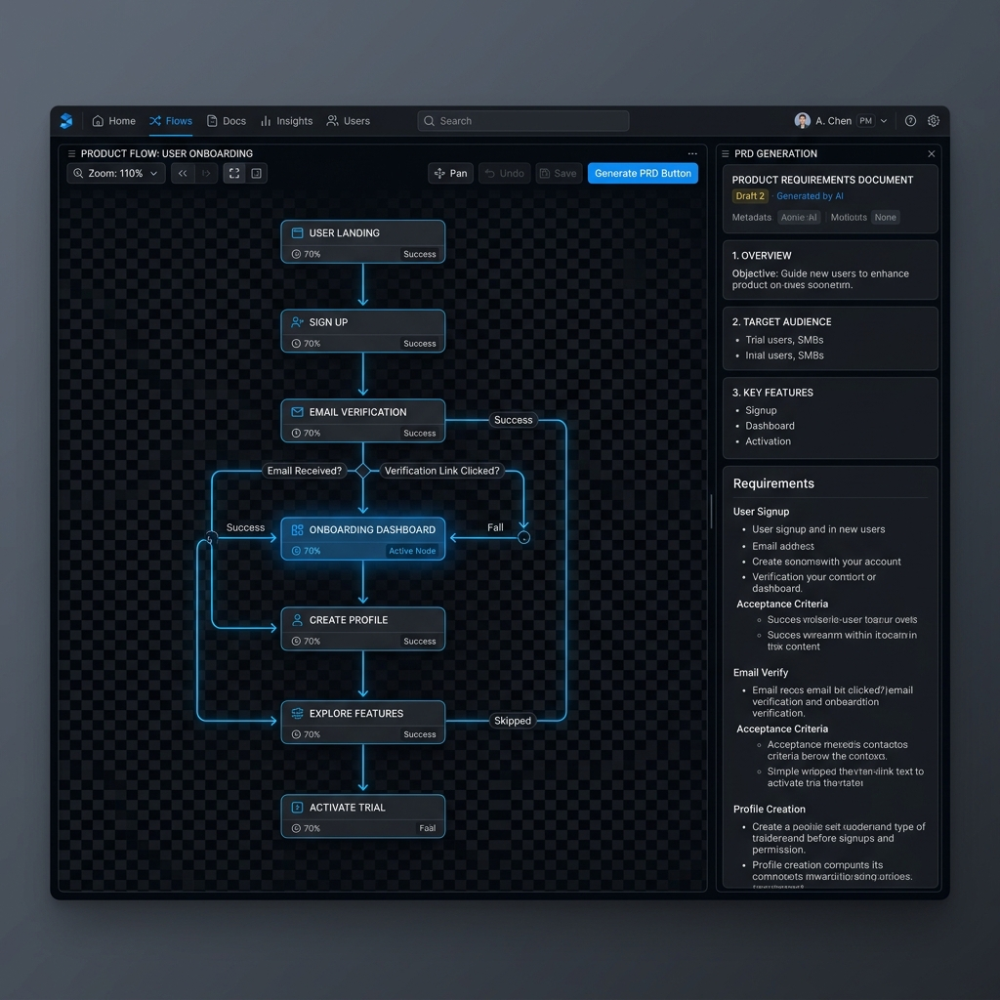
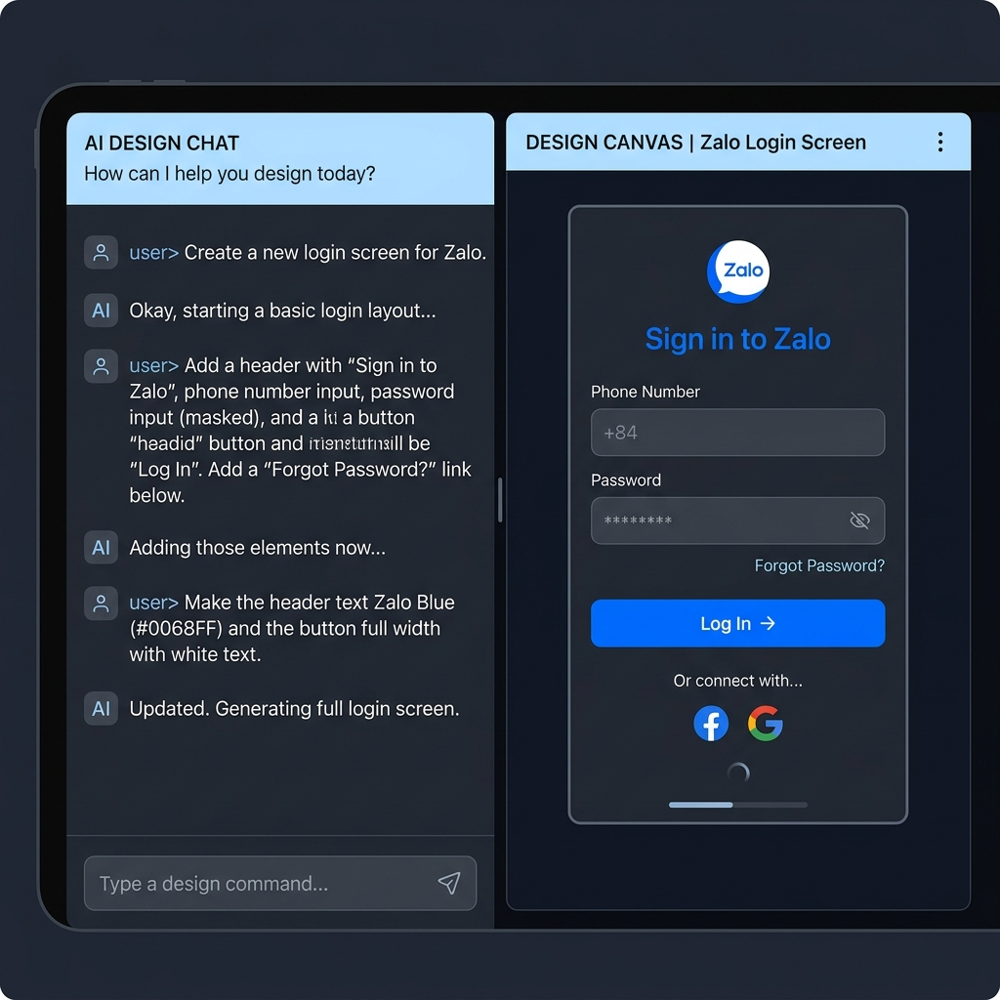

PROJECT DEEP DIVE PHÂN TÍCH CHUYÊN SÂU
How DualMind orchestrates the Product Lifecycle. Cách DualMind điều phối toàn bộ vòng đời Sản phẩm.
An in-depth look at the architecture, the local-first execution model, and the Figma Crafting worker behind DualMind. Góc nhìn sâu sắc về kiến trúc ứng dụng cục bộ (local-first) và hệ thống Agentic Figma Crafting phía sau DualMind.
1. Idea → Discovery → Decision → Delivery 1. Từ Ý tưởng đến Thực thi
DualMind is not an open-ended chatbot. It relies on a controlled lifecycle state machine. When a PM inputs an idea, the agent triggers a guided flow. Instead of chatting aimlessly, it presents 3 selectable clarification paths leading directly to an MVP proposal. Once decided, it generates a comprehensive ProductSpec on the Infinity Canvas. DualMind không phải là một con Chatbot mở mông lung. Nó được kiểm soát bởi một cỗ máy trạng thái (State Machine) chặt chẽ. Khi PM nhập ý tưởng, Agent sẽ kích hoạt luồng "Discovery". Thay vì chat tự do, nó đưa ra 3 hướng khai thác có sẵn (lựa chọn bấm được) để dẫn dắt ra phương án MVP tối ưu. Sau khi chốt phương án, nó dựng toàn bộ bản ProductSpec lên Bảng vẽ Vô cực.

2. Infinity Canvas & Self-Critique 2. Bảng vẽ Vô cực và Linter Logic
DualMind visualizes the user flow using a semantic dagre layout. But it goes further: it treats your workflow as a directed graph and runs a Logical Flow Linter. It actively flags dead ends, branches without decisions, or infinite loops directly on the canvas, ensuring the logic is bulletproof before any design or code is written. DualMind trình bày luồng người dùng (User Flow) bằng thuật toán layout dagre có định hướng ngữ nghĩa. Hơn thế nữa, nó coi toàn bộ luồng làm việc của bạn như một đồ thị có hướng và chạy Logical Flow Linter. Nó sẽ tự động tô đỏ các ngõ cụt, các nhánh thiếu điều kiện, hay những vòng lặp vô tận ngay trên Bảng vẽ. Mọi lỗ hổng logic đều được bít kín trước khi chuyển qua thiết kế và code.
3. Figma Crafting Worker 3. Sức mạnh Vẽ Giao diện (Figma Crafting)
Once the ProductSpec is approved, DualMind doesn't just stop at text. Powered by an Agentic Craft Worker (via Codex CLI) and a custom Figma MCP runtime, it reads Zalo Design System (ZDS) reference components and generates real, clickable Figma prototypes perfectly matching the ZDS guidelines. If you don't have Figma connected, it seamlessly gracefully degrades to Jira + PRD mocks. Khi ProductSpec đã được chốt, DualMind không dừng lại ở văn bản. Với sức mạnh của Agentic Craft Worker và runtime Figma MCP nội bộ, nó sẽ nạp các component của Zalo Design System (ZDS) và tự động vẽ ra các Prototype có thể bấm được trên Figma. Bản vẽ tuân thủ 100% chuẩn ZDS. Nếu bạn chưa kết nối Figma, hệ thống vẫn tự động xuất đủ Backlog Jira và PRD Markdown.

4. Local-First & Provider Agnostic 4. Local-First & Đa Nền tảng (Provider Agnostic)
Enterprise data is secure. DualMind is an Electron desktop app storing all execution memory in SQLite. Furthermore, it integrates an AgentRouter gateway, allowing you to instantly switch between OpenAI, Gemini, Claude, or local offline mocks seamlessly without losing session context. Every external action requires an immutable Payload Hash approval. Bảo mật dữ liệu là ưu tiên số một. DualMind là một ứng dụng Desktop (Electron), lưu trữ toàn bộ lịch sử chạy trong SQLite. Khủng hơn nữa, nhờ tích hợp AgentRouter, bạn có thể chuyển đổi mượt mà giữa OpenAI, Gemini, Claude, hoặc thậm chí là mô hình offline ngay giữa phiên làm việc mà không hề gián đoạn. Mọi thao tác đẩy ra ngoài đều cần một mã băm không thể thay đổi (Payload Hash) để bạn duyệt.